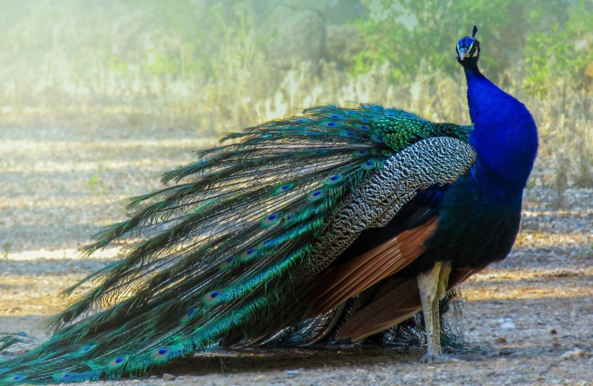
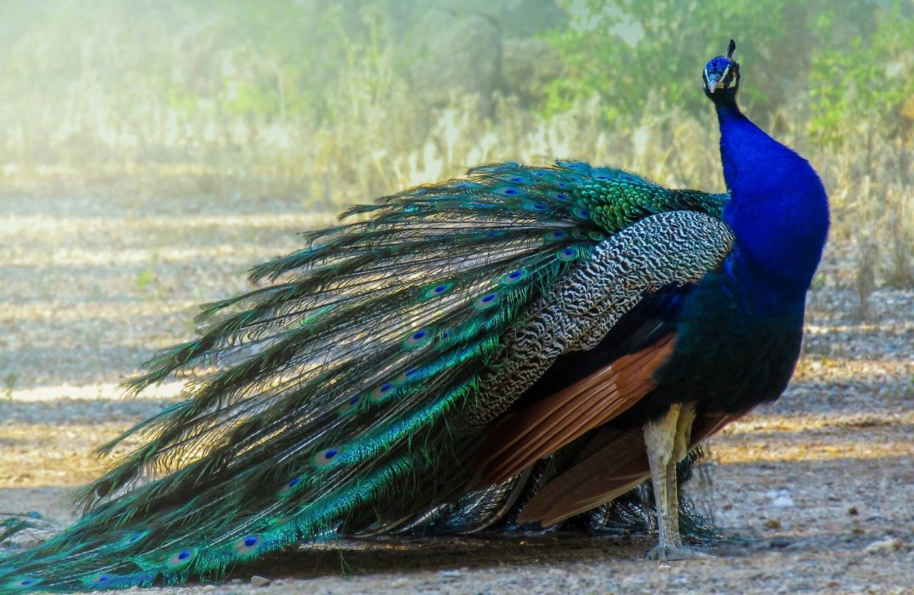

Sri Lanka is index to a diverse range of wildlife, including elephants, leopards, sloth bears, and many species of birds. The country has a number of organizations and government departments dedicated to the conservation of its wildlife. The Department of Wildlife Conservation is a non-ministerial government department responsible for maintaining national parks, nature reserves, and wildlife in wilderness areas in Sri Lanka. Every individual species is provided legal protection through the Fauna and Flora Protection Ordinance No 2 of 1937. Habitats and the associated biodiversity are protected through a network of Protected Areas.
 
